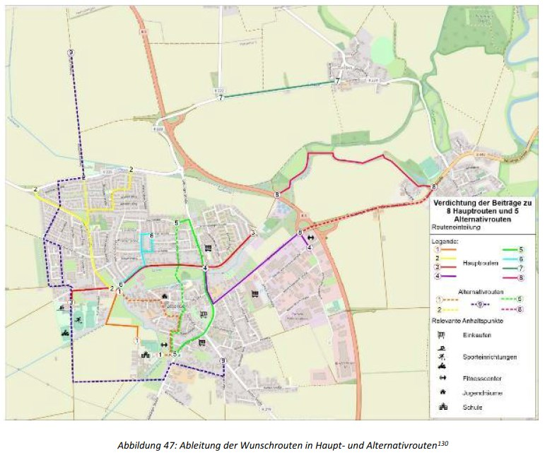

Eine Masterarbeit von Celina Feder für die Pattenser Schulradwege
Im Winter 2021/2022 hat Celina Feder eine Masterarbeit im Rahmen eines Pflichtpraktikums beim ADFC in Hannover in enger Zusammenarbeit mit dem ADFC Hemmingen/Pattensen erstellt.
Gemeinsam mit ihrem Betreuer, Prof. Dr. Menzel entwickelte sie die Fragestellung und den Aufbau der Arbeit.
Das Ziel dieser Arbeit war es, die Fahrradinfrastruktur Pattensens zu analysieren und mögliche Optimierungen auch in Bezug auf Meinungen der Schüler/-innen der Kooperativen Gesamtschule (KGS) Pattensen auszuarbeiten. Unter Anwendung des Bewertungsverfahrens nach den Hinweisen zur einheitlichen Bewertung von Radverkehrsanlagen (H EBRA) der Forschungsgesellschaft für Straßen- und Verkehrswesen (FGSV)-Richtlinie sollte eine infrastrukturelle Handlungsempfehlung für die Stadt Pattensen abgeleitet werden. Unter Berücksichtigung von Expertenmeinungen sowie Meinungen von Schüler/-innen sollten diese infrastrukturellen Maßnahmen schlussendlich gefestigt werden.
Zitat aus der Masterarbeit:
Zusammenfassung und Schlussbetrachtung
In der vorliegenden Masterarbeit ging es um die Fahrradinfrastruktur der Zukunft der Stadt Pat-
tensen, die als Partizipationsmaßnahme von Schüler/-innen durchgeführt wurde. Anschließend
wurde daraus ableitend eine infrastrukturelle Handlungsempfehlung ermittelt und dargelegt. Für
den Ergebnistransfer wurde eine quantitative sowie qualitative Analyse in Form einer Online-Um-
frage, eines Workshops und mittels Experteninterviews zum aktuellen Fahrradfahrverhalten,
Wünsche bezüglich der Fahrradinfrastruktur und Wunschrouten sowie über bestehende fahrrad-
infrastrukturelle Gegebenheiten durchgeführt. Dabei stellte sich die Frage, welche Unterschiede
zwischen der Fahrradinfrastrukturbewertung zwischen der Expert/-innen und den Schüler/-innen
auftreten und wie die Fahrradinfrastruktur in Pattensen in den nächsten Jahren aussehen könnte.
Darüber hinaus stand die Anwendung und kritische Beurteilung eines Bewertungsverfahrens von
Radverkehrsanlagen im Vordergrund, auf Grundlage dessen Mängel identifiziert und daraufhin
Handlungsempfehlungen abgeleitet wurden.Aus den Ergebnissen lässt sich schließen, dass die aktuelle Fahrradinfrastruktur in der Stadt Pat-
tensen kaum ausgebaut und lediglich einen mangelhaften Zustand aufweist. Aus der Online-Um-
frage ging hervor, dass das Fahrradfahrverhalten der Schüler/-innen entsprechend gut ist und
mehr als die Hälfte der Befragten nahezu täglich das Fahrrad nutzen, weshalb vor allem die Schü-
ler/-innen in der Altersgruppe zwischen 13 und 17 Jahren auf das Fahrrad als Fortbewegungsmittel
angewiesen sind. Die Ergebnisse des Workshops und die daraus resultierten Wunschrouten in Ver-
bindung mit der vorhandenen Fahrradinfrastruktur versinnbildlichten die wenig ausgebaute Infra-
struktur für den Radverkehr. Des Weiteren konnten aus den geführten Experteninterviews keine
Einschätzungen zu aktuell geplanten Maßnahmen, Radverkehrskonzepten, Fahrradinfrastruktur
o. Ä. gemacht werden. Lediglich die nahezu täglichen Nutzer/-innen (Schülerinnen und Schüler)
konnten einen großen Beitrag über mögliche Problemstellen leisten, sodass ein Vergleich zwi-
schen Expert/-innen und Schüler/-innen nicht stattfinden konnte. Weiterhin waren die Erhebungs-
daten nicht mehr ausreichend aktuell und die bisher durchgeführten Analysen und vorgeschlage-
nen Maßnahmen im Kapitel 3.3. bzgl. Des aktuellen Forschungsstands blieben bisher unbeachtet.Daneben bestätigte das vorgestellte und an einem Streckenabschnitt der Göttinger Straße ange-
wandte Bewertungsverfahren nach H EBRA den mangelhaften Zustand der RVA. Aus den Angaben
der Schüler/-innen, einer interaktiven Mängelkarte sowie aus eigenem Ermessen in Form einer
Ortsbegehung wurde vorab eine Mängelliste für die Göttinger Straße erstellt, die mit in das Be-
wertungsverfahren einfloss. Bei den identifizierten Mängeln handelte es sich sowohl um die
falsche Führungsform als auch um Mängel entlang der Anlage, sodass es eine Optimierung und
Anpassung in beide Richtungen bedarf. Die erstellte infrastrukturelle Handlungsempfehlung
würde demnach die identifizierten Mängel zum Großteil abdecken. Vor allem in Bezug auf die
Schüler/-innen ist es daher von Relevanz eine sichere und komfortable Fahrradinfrastruktur be-
reitzustellen, um insbesondere das Verkehrsmittel Fahrrad, auch in Bezug auf die Verkehrswende,
weiter voranzubringen.
